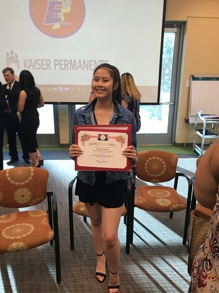

Natalie Nguyen
My name is Natalie Nguyen, I am 19 years old, and I was born and raised in Lancaster, California. My parents immigrated from Vietnam and we travel to Vietnam frequently to give back to our family and community. My family and I are very humble and in touch with our roots. My parents and I work tirelessly to ensure that our friends and family in Vietnam are well taken care of. In my spare time I like to participate in community service. I was President of my Key Club Chapter in highschool and carried that over with me to University. I never stopped doing community service. It is more rewarding to me than any other activity I have ever participated in. It's something that means a lot to me and I will continue to do community service for as long as I can.
In my academic career I decided to enter University as a biology major and pre-med professional path. I decided in high school when I was part of the Kiaser Permanente Medical Explorers Program. Now I participate in Shadow MD and AMSA. In Shadow MD, I shadow doctors and learn how to diagnose and treat patients gaining hands on experience in the medical field. Not only do I shadow doctors at their private practice, but I also participate in other Shadow MD activities such as, making Christmas cards for children at the Children's Hospital and assembling hygiene kits for the local free clinic. I also participate in AMSA and volunteer in health fairs and other activities for the community that include providing service to the homeless population, like hot meals. As a member of AMSA I have access to guest speakers from medical schools and MCAT tuturs to further enrich our Pre-Med Journey.
Aside from volunteering and organizations, in my personal life, I work as a nail technician. My mom owns a nail salon, but she's the sole nail technician. I started doing nails when I was 15 to help my mom retain clients. Now I do nails on my own here at the University. It helps me get by while my parents work back home to sustain our family here in the states and Vietnam. I learned to do nails for survival, but now it is something I enjoy doing. I feel very fulfilled when I see clients satisfied with the work I have performed on them. It also helps me to express myself creativity. I have the opportunity to try new techniques on clients and strengthen my skills further.
From a very young age I have been humble and hardworking, just like my parents. I carried those traits with me over to University, where I work hard in my STEM classes to reach my goal. I have struggled, but I am relentless. I do not want to give up easily and learned from my parents, as I get to set the same example for my siblings. As the first in my family to attend University, I hope to achieve my goal and help others through community service along the way.
Experience
IMs Volleyball Official
• Officiated games for the Women’s League , Men’s League, and Co- Rec League
• Help participants understand the rules of UCR Volleyball Intramural’s and meet the eligibility requirements in order to participate in UCR Volleyball Intramural
• Communicated with both other officials and players on the court by stating what the errors were during the game and which team received the point
• Experience using the scorkeeping machine and tally sheets
LULAC Health Fair - Volunteer
• Assisted medical administration staff and directed adults attendees to the following areas: glucose room, primary care, dental care, or optometry and answer the attendees questions
• Became a messenger when it got busy by helping the health professionals communicate with the LULAC staff members and inform other volunteers of any changes
• Made copies of paperwork that were running low and quickly brought them to their original stations
AMSA: Jurupa Health Fair - Volunteer
• Welcomed drivers by introducing myself and the event, then directed the drivers to the open parking areas
• Directed the attendees that were walking to see optometry to a seat and helped examiners by keeping the attendees still and leveled up to the machine. I also made sure that the eye examination equipment was properly cleaned before each patient
• Responsible for the safety of 15 children, making sure that both children and parents are aware of the safety and behavioral rules of the kids zone, and supervised the children especially when the parents went to other booths
AMSA: Helping Hands Pantry - Volunteer
• Reorganized canned goods by meat, vegetables, and fruit, then out them in new boxes and collaborated with other members of other organizations
• Wrapped eight refridgerators with plastic and sort boxes based on size and condition
• Cleaned the tables and sweapt the floor every each round of goods that went through
Education
University of California Riverside
Portfolio
.jpg)

.jpg)
.jpg)
.jpg)
.jpg)